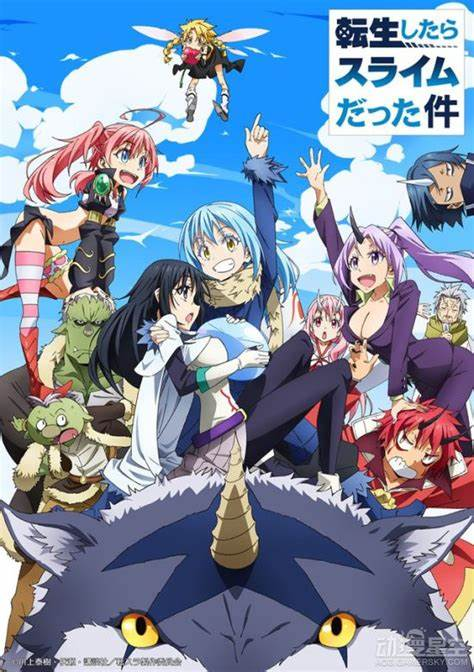

- Overlord
- Re:Zero
- No Game No Life
- Konosuba: God's Blessing on this Wonderful world
- That Time I got Reincarnated as a Slime
- The Eminence in Shadow
- The Devil is a Part-Timer


Isekai is a very special kind of anime genre, where the story happens in another world. The direct translation of Isekai is “Other world”. This often involves fictional content, such as magic, technologies, stats etc. There are generally two different kinds of Isekai patterns, the first being the main character was born and grown up in the other world, whether this occurred naturally or functioned as a reincarnation. The other being the main character was transported into the other world midway through their lives. Depending on the context of the story, this genre may be combined with many other ones, such as horror, adventure, fantasy, romance, mystery, mecha, etc. In addition, the other world can be very creative, for instance the other world may not possess the technology of guns, planes, or commercial products, such as phones, computers. This genre usually highlights the capabilities of the main character being very different from the locals of the other world. This would make a very ordinary being in the regular become one of the most overpowered beings in the other world. Typically, the main character in real life is not having a good life, but after they went to the other world, their lives got all of a sudden better, to function as a contrast, making the viewers want to find out how much power would the main character get. The powers can be game stats, skills, overwhelming magic, knowledge, wealth, sometimes multiple wives. These anime can be very fun to watch over a short period of time, but would gradually get boring the longer the series goes on, since the main character wouldn’t face much of a challenge. However, there are still many great options to consider under this genre.
Shonen, directly translated to young boys, usually referring to an age around 14 to 17 years old. Shonen anime, meaning that these anime would generally have young boys as their targeted audiences. In the anime, the story usually would have a young boy as the main character, chasing for an ultimate goal in the series. Along the way the main character would meet new friends, fight various villains, and potentially make new families. Many Shonen anime would last for over 500 episodes due to their high popularity. This was a very popular genre in anime, and in Japan, Shonen Jump is a very popular comic series that contains new episodes from many popular series. Many young audiences in Japan love to watch Shonen anime, as it involves a lot of actions, adventure, positive energy, and very long lasting effects. Many classic anime throughout the entire anime history are all Shonen anime. For example, Dragon Ball, Naruto, One Piece, Bleach, etc. This is a very simple genre to set up the plot, where the main character only thinks to achieve his own and face all kinds of challenges along the way. Many younger audiences back then would see them as childhood memories at this point, which adds a layer of nostalgia. Different from anime for kids, Shonen anime would sometimes deliver more of a deeper thinking in meaning. The main character would reflect on life, their purpose to fight, their beliefs and values. Some of the early Shonen anime may also contain elements of blood, brutality, and fairly violent actions. In addition, even if watching the show from an adult’s perspective, the plot wouldn’t seem as boring or immature.


Shoujo is kind of the opposite of Shonen anime. Shonen translates to young boys, and Shoujo translates to younger girls. Shoujo anime is made usually for younger female audiences around the age of 12 - 18 years old. The context of such an anime would involve the main character being a young girl, and the story would go through elements such as romance, drama and sometimes adventurous plots. Different from Shonen anime, Shoujo anime would contain more inner character thoughts between relationships, life, families, etc. This shows the difference between boys, where the boy would think more directly towards and cause and action, the girl considers more on consequences, plans, and ideology. As the female being the main character, there are many sciences in the anime that show how females may overcome male in terms of power, ability, as a symbol of feminism. Character developments from Shoujo anime would demonstrate aspects in relationships, their position in hierarchy amongst a certain group of people, or her improvements in a certain area she cares about. I personally don’t watch much Shoujo anime but I still see this as a very significant portion of anime history. Out of the Shoujo anime, formed the genre of Mahou Shoujo, where the female character would turn into a superpower female warrior and save the world.
Harem is a kind of anime where the main character is a super attractive boy that tends to have many girls that show love interest towards him, sometimes they would have a girl be the main character. The story can happen whether fiction or nonfiction. Usually, for the purpose of not including any adult related content, the story would make the main character under the age of 18. In addition, the main character would often have a very num personality, where he would never discover a love interest from any of the girls. Even if he does, there usually wouldn’t be a choice between any of the girls, if there is a selection, then is usually when the series would end. This type of anime wouldn’t need a very impressive plot design, as long as the girls can have a very straining character design. This is a very big seller regardless if they are making any merchandise or video games. Therefore, there are very significant pros and cons to this kind of genre. In my case, in order to fully enjoy the show, people need to turn their brain off and not think too deeply into the plot of the story, just simply admire the girls. In addition, the story wouldn’t contain any other major male characters besides the protagonist, or else it would create a very disturbing story effect, known as NTR. Kind of hard to explain, but NTR is when the female characters are cheating on the male, although they may not be literally doing it, but under the harem anime context., this is a very dangerous action.
Kodomomuke is a genre for kids to watch, this would target audiences from the age of 3-12. In a Kodomomuke anime, the main character would have an age under 10 years old to build a connection between the audience. These kinds of anime would focus more on educational content, telling the kids what is wrong and what is right. The more advanced ones may also contain professional information in a certain area, while maintaining a very interesting plot. Since this genre is meant for kids, the plot design is quite simple and easy to understand. At an older age, many of us would see some of the content to be very awkward and immature to watch. The show would use a very colorful and vivid tone of animation to set up a positive attitude for the audience. Many challenges that the main character would face in the story can be solved within one or less episode. As kids couldn’t consume too much information, the point is to not make the challenge difficult, but to teach the idea of not giving up. As an older audience, we don’t pay much attention to this genre of anime, but it is still worth mentioning. In addition, as we get older and look back at the old times, we would think how times have passed and now we have all grown up, some may even have a family of their own.
Ecchi is a very special type of anime, where the content would contain a large amount of sexual intentions and hints. This is very similar to harem anime, expect, harem anime normally wouldn’t bring the focus on to actual love making or sexual context, since those are love interests from teenagers, not adults. Echhi, on the other hand, directly translates to pervert, or lust, and the plot may be centered around the idea of having direct body contact in a sexual way. There may even be many clips and scenes where the female characters are shown without clothes on. This is an effective method to attract male audiences whether adult or not. The reason for this type of anime to be legally watched by teenagers, is that despite having many sexual suggestions, the characters in the show never actually have sex. The type of anime where it is only eligible for adults is called Hentai, which is different from Ecchi. In ecchi, we don’t or suggest scenes of actual sex, to be specific, lower body parts of male or female are never allowed to be shown in Ecchi anime. Even in hentai, many of them are blurred out, as it can be disturbing to many audiences. From my experience, there are hardly any Ecchi anime with good plots, but if they do, then people would get more attracted by the plot rather than the sexual content.
Slice of life is a very interesting type of anime. From the name of the genre, it may sound very intriguing by the word slice, but this genre is talking about daily lives amongst the main characters. The overall show is under a very calming and peaceful tone, there aren’t many series with tragic backstory, nor a significant world problem waiting to be solved, it can just be the daily lives of a bunch of high school students making funny jokes while having some unique experiences. The daily lives may even be fictional, adding an extra layer of story interest, and some of the more successful slice of life anime are fictional. This is the type of anime that is suitable for any age, any gender, it can be watched under any circumstances, and people may even skip ahead several episodes and still find themselves being able to understand what is going on, since the episodes typically don’t have a strong plot connection, unless it is an introduction to a new character in the story. In fact, many American cartoon shows use the format of slice of life in their storyline. From the daily lives, we also get to see how the relationships between the main characters have evolved and see a progression from the first episode to the last episode, indicating a very strong plot device since the story itself wouldn’t have much of a literal climax. I personally enjoy this kind of anime the more I grow up. As more stress has been building up, we need something like this to calm ourselves down.